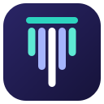
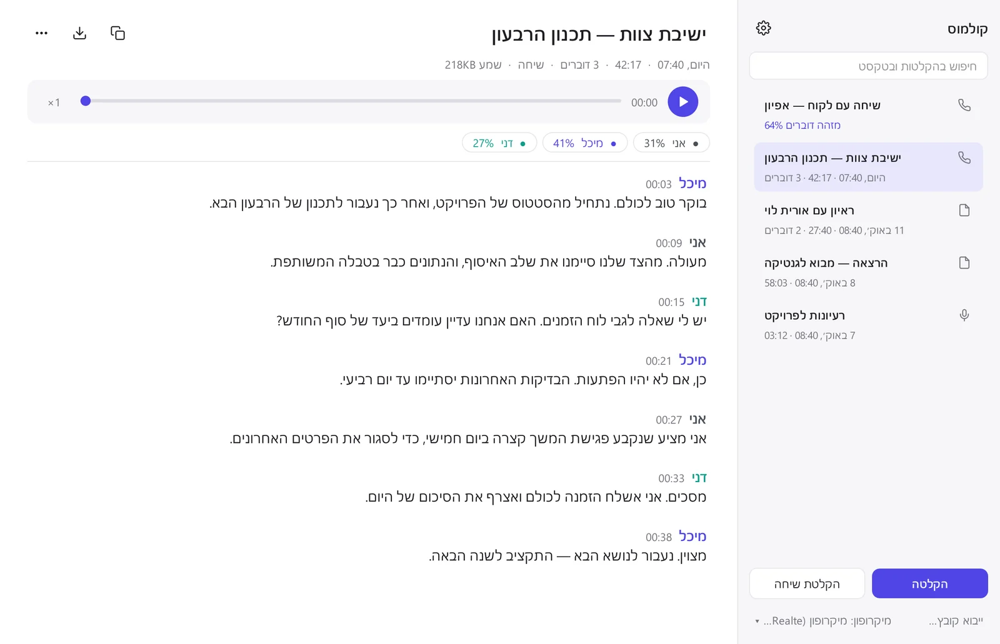
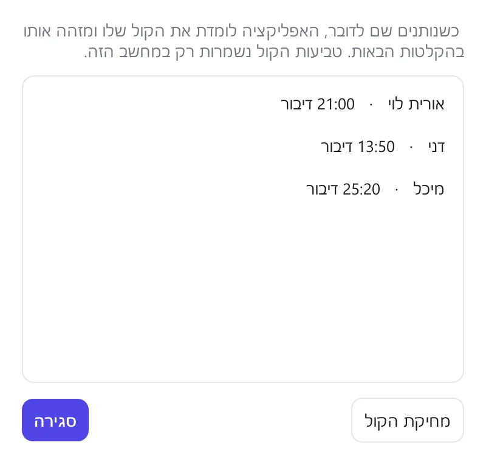
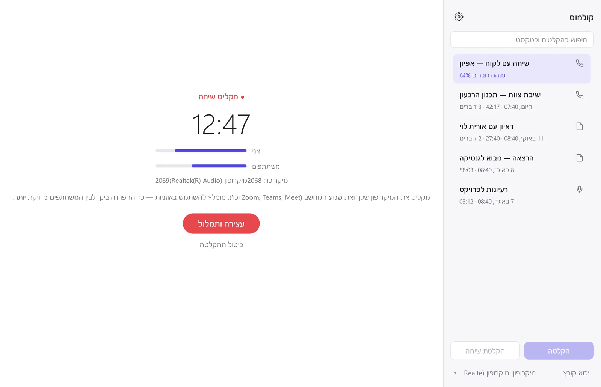
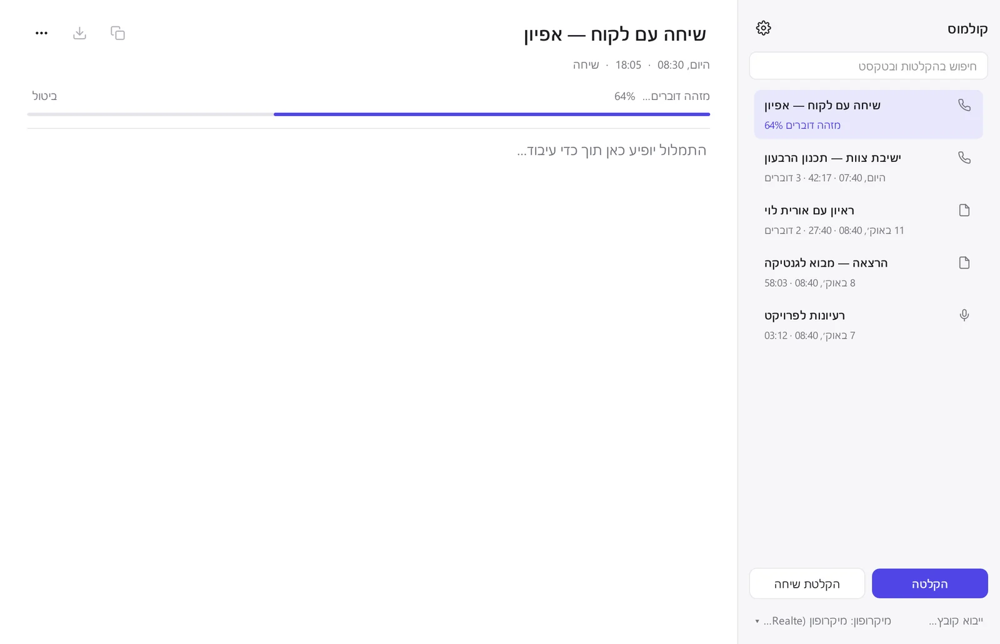

<title>קולמוס</title>
<link rel="preconnect" href="https://fonts.googleapis.com">
<link rel="preconnect" href="https://fonts.gstatic.com" crossorigin>
<link rel="stylesheet" href="https://fonts.googleapis.com/css2?family=IBM+Plex+Mono:wght@400;500&family=IBM+Plex+Sans+Hebrew:wght@400;500;600&family=Suez+One&display=swap">
<style>
/* Layout: right-to-left product page; the hero pairs the promise with the real app window, then
   features (each with its screenshot), downloads per OS, requirements, limits, questions. */
:root {
  --bg: #F6F6F9;          /* page ground, a grey tinted toward the app's indigo */
  --surface: #FFFFFF;     /* cards, window frames */
  --ink: #1D1D22;         /* text (the app's own text colour) */
  --muted: #62626E;       /* secondary text */
  --line: #E3E3EA;        /* hairlines */
  --accent: #4F46E5;      /* the app's indigo */
  --accent-ink: #FFFFFF;
  --accent-soft: #ECEBFD;
  --teal: #0F9D8A;        /* second speaker colour in the app */
  --warn: #9A5B00;
  --shadow: 0 1px 2px rgb(30 27 75 / 6%), 0 12px 32px -12px rgb(30 27 75 / 18%);
  --display: "Suez One", "Frank Ruhl Libre", Georgia, serif;
  --body: "IBM Plex Sans Hebrew", "Segoe UI", Arial, sans-serif;
  --mono: "IBM Plex Mono", Consolas, monospace;
  --step-0: 1rem; --step-1: 1.2rem; --step-2: 1.55rem; --step-3: 2.1rem; --step-4: clamp(2.3rem, 5.2vw, 3.6rem);
}
@media (prefers-color-scheme: dark) {
  :root:not([data-theme="light"]) {
    --bg: #111117; --surface: #1A1A22; --ink: #ECECF3; --muted: #A2A2B2; --line: #2C2C38;
    --accent: #8C86FF; --accent-ink: #0E0E14; --accent-soft: #24233F; --teal: #3CC9B4; --warn: #E2A84B;
    --shadow: 0 1px 2px rgb(0 0 0 / 40%), 0 16px 40px -16px rgb(0 0 0 / 70%);
    color-scheme: dark;
  }
}
:root[data-theme="dark"] {
  --bg: #111117; --surface: #1A1A22; --ink: #ECECF3; --muted: #A2A2B2; --line: #2C2C38;
  --accent: #8C86FF; --accent-ink: #0E0E14; --accent-soft: #24233F; --teal: #3CC9B4; --warn: #E2A84B;
  --shadow: 0 1px 2px rgb(0 0 0 / 40%), 0 16px 40px -16px rgb(0 0 0 / 70%);
  color-scheme: dark;
}

* { box-sizing: border-box; }
body {
  margin: 0; background: var(--bg); color: var(--ink); font-family: var(--body); font-size: var(--step-0);
  line-height: 1.65; direction: rtl; -webkit-font-smoothing: antialiased;
}
.wrap { max-width: 1120px; margin-inline: auto; padding-inline: 20px; }
a { color: var(--accent); }
a:focus-visible, button:focus-visible, summary:focus-visible { outline: 3px solid var(--accent); outline-offset: 3px; border-radius: 6px; }
h1, h2, h3 { font-family: var(--display); font-weight: 400; line-height: 1.2; text-wrap: balance; margin: 0; }
h2 { font-size: var(--step-3); }
h3 { font-size: var(--step-1); font-family: var(--body); font-weight: 600; }
p { margin: 0; }
.mono, .num { font-family: var(--mono); font-variant-numeric: tabular-nums; }
.eyebrow { font-size: .8rem; font-weight: 600; letter-spacing: .06em; color: var(--accent); }

/* header */
header.top { position: sticky; top: env(safe-area-inset-top, 0px); z-index: 10; background: color-mix(in srgb, var(--bg) 88%, transparent);
  backdrop-filter: blur(10px); border-bottom: 1px solid var(--line); }
header.top .wrap { display: flex; align-items: center; gap: 24px; min-height: 62px; }
.brand { display: flex; align-items: center; gap: 10px; text-decoration: none; color: var(--ink); font-weight: 600; }
.brand img { width: 30px; height: 30px; border-radius: 8px; }
nav.links { display: flex; gap: 22px; margin-inline-start: auto; font-size: .95rem; }
nav.links a { color: var(--muted); text-decoration: none; }
nav.links a:hover { color: var(--ink); }
.btn { display: inline-flex; align-items: center; justify-content: center; gap: 8px; border-radius: 10px; padding: 11px 20px;
  font: 600 1rem var(--body); text-decoration: none; border: 1px solid transparent; cursor: pointer; white-space: nowrap; }
.btn-primary { background: var(--accent); color: var(--accent-ink); }
.btn-primary:hover { filter: brightness(1.08); }
.btn-quiet { background: var(--surface); color: var(--ink); border-color: var(--line); }
.btn-quiet:hover { border-color: var(--muted); }
.btn-sm { padding: 7px 14px; font-size: .92rem; }
@media (max-width: 760px) { nav.links { display: none; } header.top .btn { margin-inline-start: auto; } }

/* hero */
.hero { padding-block: 64px 40px; }
.hero .wrap { display: grid; grid-template-columns: minmax(0, 0.9fr) minmax(0, 1.1fr); gap: 48px; align-items: center; }
.hero h1 { font-size: var(--step-4); }
.hero h1 .soft { color: var(--accent); }
.lede { font-size: var(--step-1); color: var(--muted); margin-top: 18px; max-width: 34ch; }
.cta { display: flex; flex-wrap: wrap; gap: 12px; margin-top: 28px; }
.facts { display: flex; flex-wrap: wrap; gap: 8px 18px; margin-top: 22px; color: var(--muted); font-size: .92rem; }
.facts span::before { content: "✓"; color: var(--teal); margin-inline-end: 6px; font-weight: 700; }
.counter { margin-top: 14px; font-size: .92rem; color: var(--muted); min-height: 1.6em; }
.counter b { color: var(--ink); font-family: var(--mono); font-weight: 500; }

/* waveform turning into lines: the app's own mark, in motion */
.mark { display: flex; align-items: center; gap: 18px; height: 54px; margin-bottom: 26px; }
.mark .bars { display: flex; align-items: center; gap: 5px; height: 100%; }
.mark .bars i { width: 6px; border-radius: 3px; background: var(--accent); animation: wave 1.6s ease-in-out infinite; }
.mark .bars i:nth-child(1) { height: 40%; animation-delay: -.2s; }
.mark .bars i:nth-child(2) { height: 85%; animation-delay: -.6s; }
.mark .bars i:nth-child(3) { height: 60%; animation-delay: -1s; }
.mark .bars i:nth-child(4) { height: 30%; animation-delay: -.4s; }
.mark .arrow { color: var(--muted); font-size: 1.3rem; }
.mark .lines { display: grid; gap: 7px; }
.mark .lines i { display: block; height: 7px; border-radius: 4px; background: var(--ink); opacity: .85; justify-self: start; }
.mark .lines i:nth-child(1) { width: 92px; }
.mark .lines i:nth-child(2) { width: 68px; opacity: .55; }
.mark .lines i:nth-child(3) { width: 44px; opacity: .35; }
@keyframes wave { 0%, 100% { transform: scaleY(1); } 50% { transform: scaleY(.45); } }
@media (prefers-reduced-motion: reduce) { .mark .bars i { animation: none; } }

.window { background: var(--surface); border: 1px solid var(--line); border-radius: 14px; box-shadow: var(--shadow); overflow: hidden; }
.window .chrome { display: flex; gap: 6px; padding: 10px 12px; border-bottom: 1px solid var(--line); direction: ltr; }
.window .chrome i { width: 10px; height: 10px; border-radius: 50%; background: var(--line); }
.window img { display: block; width: 100%; height: auto; }

@media (max-width: 900px) { .hero .wrap { grid-template-columns: minmax(0, 1fr); gap: 36px; } .lede { max-width: none; } }

/* sections */
section.band { padding-block: 72px; }
section.band.alt { background: var(--surface); border-block: 1px solid var(--line); }
.head { display: grid; gap: 10px; max-width: 62ch; margin-bottom: 36px; }
.head p { color: var(--muted); font-size: var(--step-1); }

/* how it works: a real sequence */
.steps { display: grid; grid-template-columns: repeat(3, minmax(0, 1fr)); gap: 20px; counter-reset: step; }
.step { padding: 24px; border-radius: 14px; background: var(--bg); border: 1px solid var(--line); display: grid; gap: 8px; align-content: start; }
.step::before { counter-increment: step; content: counter(step); font-family: var(--mono); color: var(--accent); font-size: .95rem; }
.step p { color: var(--muted); }
@media (max-width: 760px) { .steps { grid-template-columns: minmax(0, 1fr); } }

/* features with screenshots */
.feature { display: grid; grid-template-columns: minmax(0, 1fr) minmax(0, 1.25fr); gap: 44px; align-items: center; padding-block: 28px; }
.feature + .feature { border-top: 1px solid var(--line); }
.feature:nth-child(even) .copy { order: 2; }
.feature .copy { display: grid; gap: 12px; }
.feature .copy p { color: var(--muted); }
.feature ul { margin: 4px 0 0; padding-inline-start: 1.1em; color: var(--muted); display: grid; gap: 4px; }
.feature .shot-small { max-width: 380px; justify-self: center; width: 100%; }
@media (max-width: 860px) { .feature { grid-template-columns: minmax(0, 1fr); gap: 22px; } .feature:nth-child(even) .copy { order: 0; } }

.transcript { font-size: .95rem; background: var(--bg); border: 1px solid var(--line); border-radius: 12px; padding: 14px 16px; display: grid; gap: 8px; }
.transcript .who { font-weight: 600; }
.transcript .t { font-family: var(--mono); color: var(--muted); font-size: .8rem; margin-inline-start: 8px; }
.who.a { color: var(--accent); } .who.b { color: var(--teal); }

/* downloads */
.dl-grid { display: grid; grid-template-columns: repeat(3, minmax(0, 1fr)); gap: 18px; }
.os { background: var(--surface); border: 1px solid var(--line); border-radius: 14px; padding: 24px; display: grid; gap: 14px; align-content: start; }
.os.mine { border-color: var(--accent); box-shadow: 0 0 0 3px var(--accent-soft); }
.os .tag { font-size: .78rem; color: var(--accent); font-weight: 600; min-height: 1.3em; }
.os h3 { font-family: var(--display); font-weight: 400; font-size: var(--step-2); }
.os .meta { color: var(--muted); font-size: .88rem; }
.os .buttons { display: grid; gap: 8px; }
.os ol { margin: 0; padding-inline-start: 1.2em; color: var(--muted); font-size: .92rem; display: grid; gap: 6px; }
.os code, .q code { font-family: var(--mono); font-size: .85rem; background: var(--bg); border: 1px solid var(--line); border-radius: 6px; padding: 1px 6px; direction: ltr; unicode-bidi: isolate; word-break: break-all; }
.os .count { font-size: .85rem; color: var(--muted); }
.os .count b { font-family: var(--mono); font-weight: 500; color: var(--ink); }
.note { font-size: .88rem; color: var(--warn); }
@media (max-width: 900px) { .dl-grid { grid-template-columns: minmax(0, 1fr); } }

/* requirements + limits */
.specs { display: grid; grid-template-columns: minmax(0, 1fr) minmax(0, 1fr); gap: 28px; }
.spec-table { width: 100%; border-collapse: collapse; font-size: .95rem; }
.spec-table th, .spec-table td { text-align: start; padding: 12px 0; border-bottom: 1px solid var(--line); vertical-align: top; }
.spec-table th { font-weight: 600; width: 34%; padding-inline-end: 14px; }
.spec-table td { color: var(--muted); }
.limits { display: grid; gap: 14px; }
.limit { display: grid; grid-template-columns: auto minmax(0, 1fr); gap: 12px; align-items: start; }
.limit .dot { width: 10px; height: 10px; border-radius: 50%; background: var(--warn); margin-top: .55em; }
.limit p { color: var(--muted); }
.limit b { color: var(--ink); font-weight: 600; }
@media (max-width: 860px) { .specs { grid-template-columns: minmax(0, 1fr); } }

/* questions */
.faq { display: grid; gap: 10px; max-width: 820px; }
details.q { background: var(--surface); border: 1px solid var(--line); border-radius: 12px; padding: 4px 18px; }
details.q summary { cursor: pointer; font-weight: 600; padding-block: 14px; list-style: none; display: flex; justify-content: space-between; gap: 12px; }
details.q summary::-webkit-details-marker { display: none; }
details.q summary::after { content: "+"; color: var(--muted); font-family: var(--mono); }
details.q[open] summary::after { content: "−"; }
details.q p { color: var(--muted); padding-bottom: 16px; }

footer { padding-block: 40px 56px; color: var(--muted); font-size: .9rem; }
footer .wrap { display: flex; flex-wrap: wrap; gap: 12px 28px; justify-content: space-between; }
footer a { color: var(--muted); }
</style>

<header class="top">
  <div class="wrap">
    <a class="brand" href="#top"><span>קולמוס</span></a>
    <nav class="links" aria-label="ניווט">
      <a href="#features">מה יש בה</a>
      <a href="#download">הורדה</a>
      <a href="#requirements">דרישות ומגבלות</a>
      <a href="#faq">שאלות</a>
    </nav>
    <a class="btn btn-primary btn-sm" href="#download">הורדה חינם</a>
  </div>
</header>

<main id="top">
  <section class="hero">
    <div class="wrap">
      <div>
        <div class="mark" aria-hidden="true">
          <span class="bars"><i></i><i></i><i></i><i></i></span>
          <span class="arrow">←</span>
          <span class="lines"><i></i><i></i><i></i></span>
        </div>
        <p class="eyebrow">קולמוס · תמלול עברית</p>
        <h1>כל מילה נכתבת, <span class="soft">על המחשב שלך.</span></h1>
        <p class="lede">מקליטים פגישה, שיחת זום או הרצאה, ומקבלים טקסט מחולק לפי דוברים. בלי אינטרנט, בלי מנוי, והשמע לא יוצא מהמחשב.</p>
        <div class="cta">
          <a class="btn btn-primary" id="hero-dl" href="#download">הורדה חינם</a>
          <a class="btn btn-quiet" href="#download">כל הגרסאות</a>
        </div>
        <div class="facts"><span>חינם וקוד פתוח</span><span>Windows · macOS · Linux</span><span>עובד בלי אינטרנט</span></div>
        <p class="counter" id="total-count" aria-live="polite"></p>
      </div>
      <div class="window">
        <div class="chrome" aria-hidden="true"><i></i><i></i><i></i></div>
        
      </div>
    </div>
  </section>

  <section class="band alt" id="how">
    <div class="wrap">
      <div class="head">
        <span class="eyebrow">איך זה עובד</span>
        <h2>שלושה צעדים, והכול קורה אצלך</h2>
      </div>
      <div class="steps">
        <div class="step"><h3>מקליטים או מייבאים</h3><p>הקלטה מהמיקרופון, הקלטת שיחה (המיקרופון שלך ושמע המחשב), או גרירה של קובץ שמע או וידאו: mp3, m4a, wav, mp4 ועוד.</p></div>
        <div class="step"><h3>התמלול רץ ברקע</h3><p>מודל העברית של ivrit.ai מתמלל על המעבד של המחשב ומפריד בין הדוברים. בינתיים אפשר להמשיך לעבוד, ואפילו להקליט שוב.</p></div>
        <div class="step"><h3>קוראים, מחפשים, מייצאים</h3><p>לחיצה על משפט מנגנת אותו. אפשר לחפש בכל ההקלטות, לתת שמות לדוברים, ולייצא לטקסט או לכתוביות.</p></div>
      </div>
    </div>
  </section>

  <section class="band" id="features">
    <div class="wrap">
      <div class="head">
        <span class="eyebrow">מה יש בה</span>
        <h2>נבנתה לשיחות אמיתיות בעברית</h2>
        <p>פגישות צוות, ראיונות, שיחות עם לקוחות והרצאות, כולל דיבור טבעי, קטיעות ומונחים מקצועיים.</p>
      </div>

      <div class="feature">
        <div class="copy">
          <h3>מי אמר מה</h3>
          <p>הטקסט מחולק לפי דוברים, עם שעה לכל משפט. נותנים שם לדובר פעם אחת, והאפליקציה לומדת את הקול שלו ומזהה אותו לבד בהקלטות הבאות.</p>
          <div class="transcript" aria-label="דוגמה לתמלול">
            <div><span class="who a">מיכל</span><span class="t">00:21</span><br>כן, אם לא יהיו הפתעות. הבדיקות האחרונות יסתיימו עד יום רביעי.</div>
            <div><span class="who b">דני</span><span class="t">00:33</span><br>מסכים. אני אשלח הזמנה לכולם ואצרף את הסיכום של היום.</div>
          </div>
        </div>
        <div class="window shot-small"></div>
      </div>

      <div class="feature">
        <div class="copy">
          <h3>הקלטת שיחות זום, Teams ו-Meet</h3>
          <p>לוחצים "הקלטת שיחה" לפני שהשיחה מתחילה. האפליקציה מקליטה את המיקרופון שלך ואת שמע המחשב בנפרד, כך שהיא יודעת מתי דיברת אתה ומתי המשתתפים. עובד עם כל אפליקציית שיחות, בלי תוספים.</p>
          <ul>
            <li>אזהרה מיידית אם המיקרופון לא קולט קול</li>
            <li>מומלץ להשתמש באוזניות לתוצאה הנקייה ביותר</li>
            <li>זמין ב-Windows וב-Linux</li>
          </ul>
        </div>
        <div class="window"></div>
      </div>

      <div class="feature">
        <div class="copy">
          <h3>ספרייה מסודרת, והמחשב שלך שולט</h3>
          <p>כל ההקלטות והתמלולים נשמרים בתיקייה שבוחרים. העיבוד מתבצע ברקע ובתור, ואפשר למחוק רק את קובץ השמע אחרי התמלול כדי לחסוך מקום.</p>
          <ul>
            <li>חיפוש בכותרות ובכל הטקסט</li>
            <li>ייצוא ל-txt ולכתוביות srt</li>
            <li>שעה של הקלטה תופסת כ-21MB בלבד</li>
          </ul>
        </div>
        <div class="window"></div>
      </div>
    </div>
  </section>

  <section class="band alt" id="download">
    <div class="wrap">
      <div class="head">
        <span class="eyebrow">הורדה</span>
        <h2>בחרו את המחשב שלכם</h2>
        <p>ההורדה הראשונה קטנה יחסית. בהפעלה הראשונה האפליקציה מורידה את מודל התמלול (1.6GB, פעם אחת בלבד), ומאז היא עובדת בלי אינטרנט.</p>
      </div>
      <div class="dl-grid">
        <article class="os" data-os="win">
          <span class="tag"></span>
          <h3>Windows</h3>
          <p class="meta">Windows 10 או 11, ‏64 ביט</p>
          <div class="buttons"><a class="btn btn-primary" data-asset="Kulmus-Windows-Setup.exe" href="#">הורדה ל-Windows</a></div>
          <ol>
            <li>מפעילים את קובץ ההתקנה (לא צריך הרשאות מנהל).</li>
            <li>אם מופיע "Windows הגן על המחשב", לוחצים "מידע נוסף" ואז "הפעל בכל זאת". זה קורה כי התוכנה חינמית ולא חתומה בתעודה בתשלום.</li>
            <li>בהפעלה הראשונה מחכים להורדת המודל.</li>
          </ol>
          <p class="count" data-count="Kulmus-Windows-Setup.exe"></p>
        </article>
        <article class="os" data-os="mac">
          <span class="tag"></span>
          <h3>macOS</h3>
          <p class="meta">macOS 12 ומעלה</p>
          <div class="buttons">
            <a class="btn btn-primary" data-asset="Kulmus-macOS-AppleSilicon.dmg" href="#">Mac עם שבב Apple ‏(M1 ומעלה)</a>
            <a class="btn btn-quiet" data-asset="Kulmus-macOS-Intel.dmg" href="#">Mac עם מעבד Intel</a>
          </div>
          <ol>
            <li>פותחים את קובץ ה-dmg וגוררים את האפליקציה לתיקיית Applications.</li>
            <li>בפתיחה הראשונה: לחיצה ימנית על האפליקציה ← "פתח" ← "פתח". זה קורה כי האפליקציה לא חתומה אצל Apple.</li>
            <li>מאשרים גישה למיקרופון.</li>
          </ol>
          <p class="note">ב-Mac אין הקלטת שמע המחשב (שיחות) בלי תוכנה נוספת. הקלטה מהמיקרופון וייבוא קבצים עובדים.</p>
          <p class="count" data-count="Kulmus-macOS-AppleSilicon.dmg Kulmus-macOS-Intel.dmg"></p>
        </article>
        <article class="os" data-os="linux">
          <span class="tag"></span>
          <h3>Linux</h3>
          <p class="meta">Ubuntu 22.04 ומעלה או מקבילה, x86-64</p>
          <div class="buttons"><a class="btn btn-primary" data-asset="Kulmus-Linux-x64.tar.gz" href="#">הורדה ל-Linux</a></div>
          <ol>
            <li>מחלצים: <code>tar -xzf Kulmus-Linux-x64.tar.gz</code></li>
            <li>מתקינים לתפריט היישומים: <code>./Kulmus/install-linux.sh</code></li>
            <li>הקלטת שיחות דורשת PulseAudio או PipeWire (ברירת המחדל ברוב ההפצות).</li>
          </ol>
          <p class="count" data-count="Kulmus-Linux-x64.tar.gz"></p>
        </article>
      </div>
    </div>
  </section>

  <section class="band" id="requirements">
    <div class="wrap">
      <div class="head">
        <span class="eyebrow">דרישות ומגבלות</span>
        <h2>מה צריך, ומה כדאי לדעת מראש</h2>
        <p>התמלול רץ כולו על המעבד של המחשב שלכם. זה מה ששומר על הפרטיות, וזה גם המחיר.</p>
      </div>
      <div class="specs">
        <table class="spec-table">
          <tbody>
            <tr><th>מעבד</th><td>64 ביט מהשנים האחרונות. מומלץ 6–8 ליבות ומעלה (למשל Core i5/i7 או Ryzen 5/7 מ-2019 והלאה, או Apple M1 ומעלה)</td></tr>
            <tr><th>זיכרון (RAM)</th><td>8GB לפחות, ‏16GB מומלץ</td></tr>
            <tr><th>מקום בדיסק</th><td>כ-3GB: האפליקציה (כחצי ג'יגה), מודל התמלול (1.6GB) והקלטות</td></tr>
            <tr><th>אינטרנט</th><td>רק בהפעלה הראשונה, להורדת המודל</td></tr>
            <tr><th>כרטיס מסך</th><td>לא נדרש (ולא מנוצל בגרסה הזו)</td></tr>
            <tr><th>מערכות</th><td>Windows 10/11 ‏(64 ביט), macOS 12 ומעלה, Linux ‏(x86-64)</td></tr>
          </tbody>
        </table>
        <div class="limits">
          <div class="limit"><span class="dot"></span><p><b>זה לוקח זמן.</b> במחשב נייד עם 8 ליבות, תמלול עם זיהוי דוברים לוקח בערך שלושה רבעים מאורך ההקלטה: שעה של פגישה מוכנה אחרי כ-45 דקות. במחשבים חלשים זה יכול לקחת יותר מאורך ההקלטה. גם הקלטה קצרה מאוד לוקחת לפחות כ-10 שניות.</p></div>
          <div class="limit"><span class="dot"></span><p><b>המעבד עמוס בזמן העיבוד.</b> התמלול מנצל כמעט את כל ליבות המעבד, ולכן המחשב יכול להיות איטי יותר והמאוורר להסתובב. העיבוד רץ בעדיפות נמוכה, כך שעבודה רגילה והקלטה חדשה ממשיכות לעבוד.</p></div>
          <div class="limit"><span class="dot"></span><p><b>הפרדת הדוברים לא מושלמת.</b> היא טובה בשיחות של 2–4 אנשים עם מיקרופון סביר. כשמדברים אחד על השני, בתגובות קצרות ("כן", "אה") ובקולות דומים, חלק מהמשפטים ישויכו לדובר הלא נכון. אפשר לתמלל מחדש עם מספר הדוברים המדויק.</p></div>
          <div class="limit"><span class="dot"></span><p><b>איכות השמע קובעת.</b> רעש רקע, מיקרופון רחוק או הקלטה דחוסה מורידים את הדיוק. המודל מותאם לעברית; משפטים באנגלית מתומללים חלקית.</p></div>
          <div class="limit"><span class="dot"></span><p><b>ב-Mac אין הקלטת שיחות.</b> macOS לא מאפשר להקליט את שמע המחשב בלי תוכנה נוספת.</p></div>
        </div>
      </div>
    </div>
  </section>

  <section class="band alt" id="faq">
    <div class="wrap">
      <div class="head"><span class="eyebrow">שאלות</span><h2>שאלות נפוצות</h2></div>
      <div class="faq">
        <details class="q"><summary>זה באמת חינם?</summary><p>כן. התוכנה חינמית לגמרי, בלי מנוי ובלי הגבלת דקות, והקוד שלה פתוח לכולם (רישיון MIT).</p></details>
        <details class="q"><summary>לאן הולכות ההקלטות שלי?</summary><p>לשום מקום. השמע, הטקסט וטביעות הקול נשמרים רק בתיקייה במחשב שלכם. אחרי הורדת המודל בהפעלה הראשונה, התוכנה לא שולחת דבר לאינטרנט.</p></details>
        <details class="q"><summary>מה ההבדל משירותי תמלול באינטרנט?</summary><p>שירותים באינטרנט מהירים יותר כי הם רצים על שרתים חזקים, אבל השמע עולה אליהם ולרוב יש תשלום לפי דקה. כאן הכול נשאר אצלכם, בלי עלות, במחיר של עיבוד איטי יותר.</p></details>
        <details class="q"><summary>איך מזהים דובר לפי שם?</summary><p>לוחצים על "דובר 1" בתמלול ומקלידים שם. מאותו רגע האפליקציה זוכרת את הקול, ומסמנת אותו בשמו גם בהקלטות קיימות וגם בהקלטות הבאות. את הקולות השמורים אפשר למחוק בכל רגע מההגדרות.</p></details>
        <details class="q"><summary>אפשר לבחור איפה נשמרים הקבצים?</summary><p>כן. בהגדרות (סמל גלגל השיניים) בוחרים תיקייה, למשל בכונן חיצוני או בתיקייה מסונכרנת, ואפשר להעביר אליה את ההקלטות הקיימות.</p></details>
        <details class="q"><summary>איך מסירים את התוכנה?</summary><p>ב-Windows: "הסרת קולמוס" מתפריט התחל, או דרך הגדרות ← אפליקציות. ב-Mac: גוררים את האפליקציה לפח. ב-Linux: מוחקים את <code>~/.local/opt/Kulmus</code>. ההקלטות נשארות בתיקייה שלהן עד שמוחקים אותן.</p></details>
      </div>
    </div>
  </section>
</main>

<footer>
  <div class="wrap">
    <span>קולמוס · תמלול עברית בחינם ובקוד פתוח</span>
    <span>מבוסס על מודל העברית של <a href="https://huggingface.co/ivrit-ai/whisper-large-v3-turbo-ct2" rel="noopener">ivrit.ai</a>, ‏Whisper, ‏faster-whisper ו-sherpa-onnx · <a id="source-link" href="#" rel="noopener">קוד המקור</a></span>
  </div>
</footer>

<script>
// ---- settings: fill these in once the project is published -------------------------------------
const CONFIG = {
  repo: "omrin/kulmus",   // GitHub repository whose Releases hold the installers
  counterEndpoint: "",                      // optional, own server: "api/stats.php" (see api/README)
  downloadVia: "",                          // optional, own server: "api/download.php?file="
};
// --------------------------------------------------------------------------------------------------

const configured = !CONFIG.repo.startsWith("YOUR-");
const releaseUrl = (asset) => `https://github.com/${CONFIG.repo}/releases/latest/download/${asset}`;
const hrefFor = (asset) => CONFIG.downloadVia ? CONFIG.downloadVia + encodeURIComponent(asset) : releaseUrl(asset);

document.getElementById("source-link").href = configured ? `https://github.com/${CONFIG.repo}` : "#";
document.querySelectorAll("[data-asset]").forEach((a) => {
  a.href = configured ? hrefFor(a.dataset.asset) : "#download";
  a.rel = "noopener";
});

// suggest the visitor's own system
function detectOS() {
  const p = (navigator.userAgentData && navigator.userAgentData.platform) || navigator.platform || navigator.userAgent;
  if (/win/i.test(p)) return "win";
  if (/mac|iphone|ipad/i.test(p)) return "mac";
  if (/linux|x11/i.test(p) && !/android/i.test(navigator.userAgent)) return "linux";
  return null;
}
const os = detectOS();
const labels = { win: "הורדה ל-Windows", mac: "הורדה ל-Mac", linux: "הורדה ל-Linux" };
if (os) {
  const card = document.querySelector(`.os[data-os="${os}"]`);
  if (card) {
    card.classList.add("mine");
    card.querySelector(".tag").textContent = "המחשב שלך";
    const first = card.querySelector("[data-asset]");
    const hero = document.getElementById("hero-dl");
    hero.textContent = labels[os] + " · חינם";
    hero.href = first.href;
  }
}

// download counts: GitHub keeps a count per release file; an own-server counter can be added
const fmt = (n) => n.toLocaleString("he-IL");
async function loadCounts() {
  const counts = {};
  try {
    if (configured) {
      const r = await fetch(`https://api.github.com/repos/${CONFIG.repo}/releases?per_page=100`);
      if (r.ok) {
        for (const rel of await r.json()) for (const a of rel.assets || []) counts[a.name] = (counts[a.name] || 0) + a.download_count;
      }
    }
    if (CONFIG.counterEndpoint) {
      const r = await fetch(CONFIG.counterEndpoint, { cache: "no-store" });
      if (r.ok) for (const [k, v] of Object.entries(await r.json())) counts[k] = Math.max(counts[k] || 0, v);
    }
  } catch (e) { /* offline or blocked: the page works without the numbers */ }
  const total = Object.values(counts).reduce((s, n) => s + n, 0);
  if (total > 0) {
    document.getElementById("total-count").innerHTML = `כבר <b>${fmt(total)}</b> הורדות`;
    document.querySelectorAll("[data-count]").forEach((el) => {
      const n = el.dataset.count.split(" ").reduce((s, k) => s + (counts[k] || 0), 0);
      el.innerHTML = n ? `<b>${fmt(n)}</b> הורדות` : "";
    });
  }
}
loadCounts();
</script>
